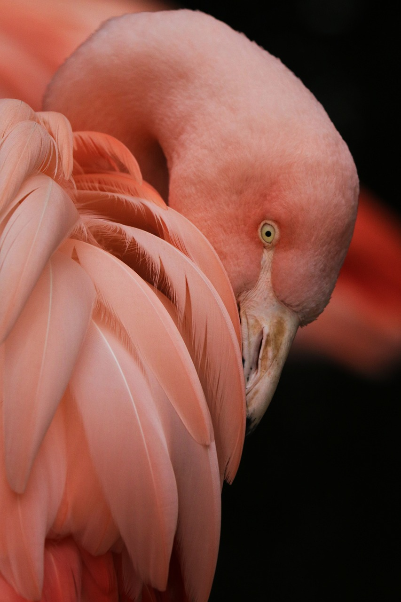
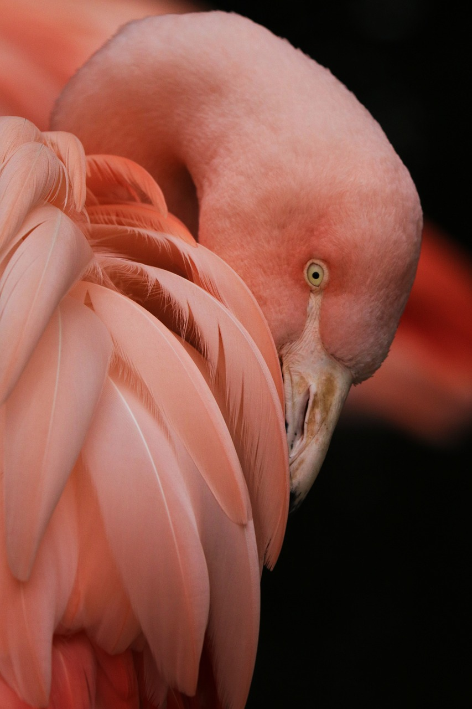

What sets my work apart is a commitment to authenticity and a love for natural light. I believe that every
photograph has a story waiting to be told, and my mission is to unfold those narratives through captivating
images. I find inspiration in the ordinary, seeking beauty in the mundane and turning everyday moments into
extraordinary visual tales.
As you explore my portfolio, you'll notice a dedication to creating images that not only please the eye but
also stir the soul. Each click of the shutter is a step towards building a visual legacy that transcends
time.
Thank you for visiting my corner of the visual world. I invite you to join me on this photographic journey,
where each image tells a story and every frame holds a piece of my passion for the art of photography. Let's
capture moments that last a lifetime together!

About me
I'm a passionate photographer with a keen eye for capturing life's extraordinary moments through the lens.
My journey in photography began as a simple fascination and has evolved into a lifelong pursuit of
visual storytelling.
I specialize in landscape, where I aim to freeze fleeting moments and create timeless images that resonate
with emotions. My goal is to not just take pictures but to craft narratives that speak volumes without
uttering a single word.
I bring a unique blend of technical expertise and creative vision to every project. Whether it's a
spontaneous street scene, a heartfelt portrait, or the grandeur of nature, I strive to capture the essence
of the subject and evoke a genuine connection with the viewer.
.webp)


 
